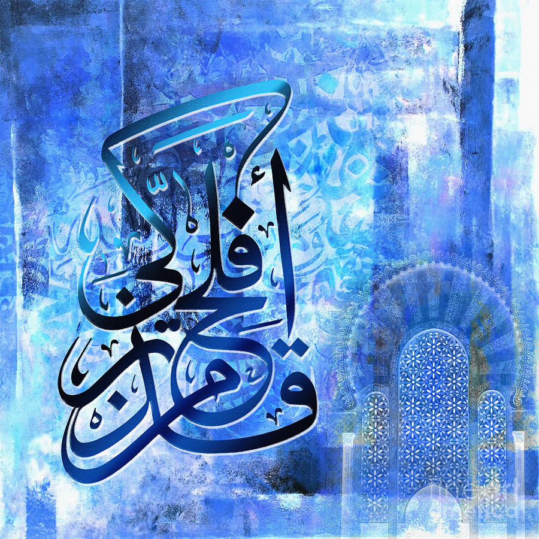

<!--navbar section-->
<nav class="navbar">
    <div class="navbar__container">
        <a href="#home" id="navbar__logo">Masjid Al Taqwah</a>
        <div class="navbar__toggel" id="moblie-menu">
            <span class="bar"></span>
            <span class="bar"></span>
            <span class="bar"></span>
        </div>
        <ul class="navbar__menu"> 
            <li class="navbar__item">
                <a href="index.html" class="navbar__links" id="home-page">home</a>
            </li>
            <li class="navbar__item">
                <a href="about.html" class="navbar__links" id="about-page">about</a>
            </li>
             <li class="navbar__item"> 
                <a href="contact.html" class="navbar__links" id="services-page">contact</a>
            </li>
            <li class="navbar__item"> 
                <a href="gallery.html" class="navbar__links" id="services-page">gallery</a>
            </li>
            <li class="navbar__btn">
                <a href="#sign-up" class="button" id="signup">sign up</a>
            </li>
         </ul>
    </div>
</nav>
<style>

main {
    box-sizing :border-box;
    margin :0;
    padding :0;
    font-family: kumbh Sans' , sans-serif ;
    scroll behavior smooth ;
}

.navbar {
    background-color: #131313;
    height: 80px;
    display: flex;
    justify-content: center;
    align-items: center;
    font-size: 1.2rem;
    position: sticky;
    top: 0;
    z-index: 999;
} 

.navbar__container {
    display: flex;
    justify-content: space-between;
    height: 80px;
    z-index: 1;
    width: 100%;
    max-width: 1300px;
    margin: 0 auto;
    padding: 0 50px;


}

#navbar__logo {
    background: #2980B9;  /* fallback for old browsers */
    background: -webkit-linear-gradient(to right, #FFFFFF, #6DD5FA, #2980B9);  /* Chrome 10-25, Safari 5.1-6 */
    background: linear-gradient(to right, #FFFFFF, #6DD5FA, #2980B9); /* W3C, IE 10+/ Edge, Firefox 16+, Chrome 26+, Opera 12+, Safari 7+ */    
    -webkit-background-clip: text;
    -moz-background-clip: text;
    -webkit-text-fill-color: transparent;
    -moz-text-fill-color: transparent;
    display: flex;
    align-items: center;
    cursor: pointer;
    text-decoration: none;
    font-size: 2 rem;
}

.navbar__menu {
    display: flex;
    align-items: center;
    list-style: none;
}

.navbar__item {
    height: 80px;
}

.navbar__links {
    color: #fff;
    display: flex;
    align-items: center;
    justify-content: center;
    width: 125px;
    text-decoration: none;
    height: 100%;
    transition: all 0.3 ease;
}

.navbar__btn {
    display: flex;
    justify-content: center;
    align-items: center;
    padding: 0 1rem;
    width: 100%;
}

.button {
    display: flex;
    justify-content: center;
    align-items: center;
    text-decoration: none;
    padding: 10px 20px;
    height: 100%;
    width: 100%;
    border: none;
    outline: none;
    border-radius: 4px;
    display: inline-block;
    margin:4px  2px ;
    font-size: 16px;
    background: #2980B9;  /* fallback for old browsers */
    background: -webkit-linear-gradient(to right, #FFFFFF, #6DD5FA, #2980B9);  /* Chrome 10-25, Safari 5.1-6 */
    background: linear-gradient(to right, #FFFFFF, #6DD5FA, #2980B9); /* W3C, IE 10+/ Edge, Firefox 16+, Chrome 26+, Opera 12+, Safari 7+ */
    color: #fff;
    transition: all 0.3s ease;
}

.navbar__links:hover {
    background: #2980B9;  /* fallback for old browsers */
    background: -webkit-linear-gradient(to right, #FFFFFF, #6DD5FA, #2980B9);  /* Chrome 10-25, Safari 5.1-6 */
    background: linear-gradient(to right, #FFFFFF, #6DD5FA, #2980B9); /* W3C, IE 10+/ Edge, Firefox 16+, Chrome 26+, Opera 12+, Safari 7+ */
    transition: all 0.3 ease;
}

body {
    background-image: url(https://i.pinimg.com/originals/05/1e/f3/051ef3a3aa5a1556a32813a6039ff60a.jpg);
  }
</style>

<style>
    .about {
      text-align: center;
    }

  </style>

<style>
    img{
      padding: 50px;
      color: white;
      background-color: black;
      padding-top: 10px;
      padding-left: 10px;
      padding-right: 10px;
    }
  </style>

  <style>
    figure{
      margin: 20;
      color: white;
    }

   
  </style>
  

  

  

  

  

  

  

  

  

  

  

  

  

  

  
  
